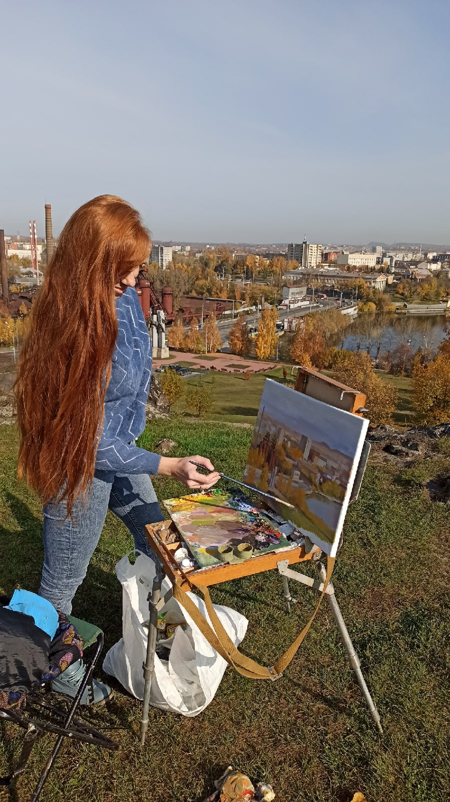
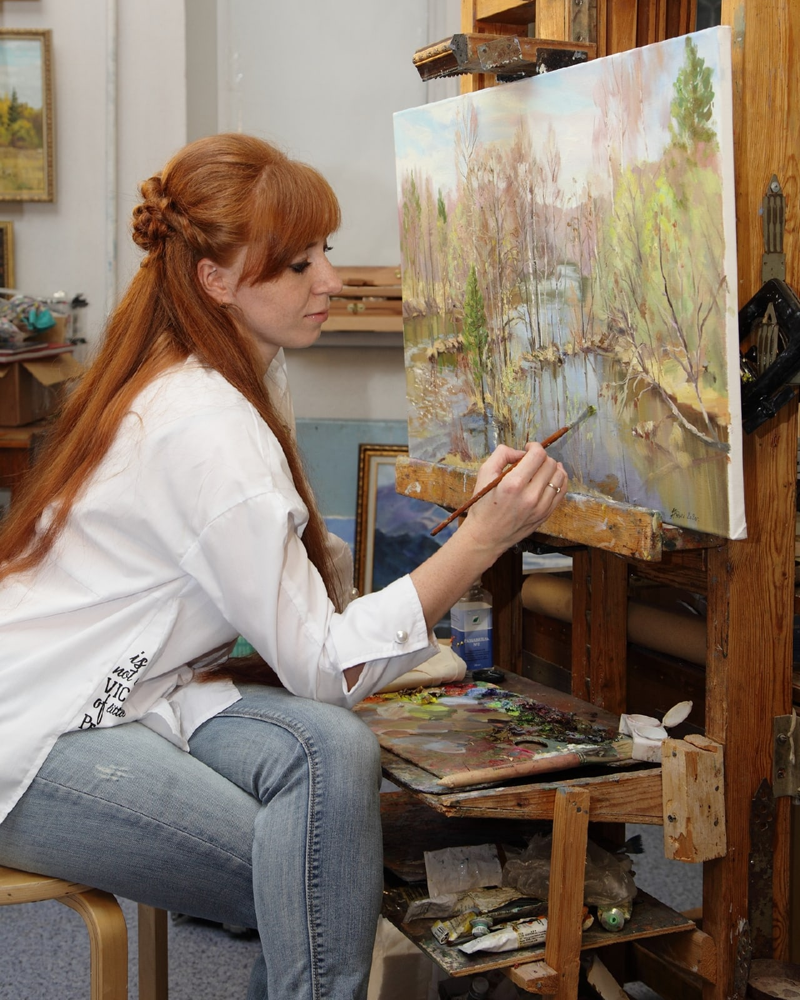
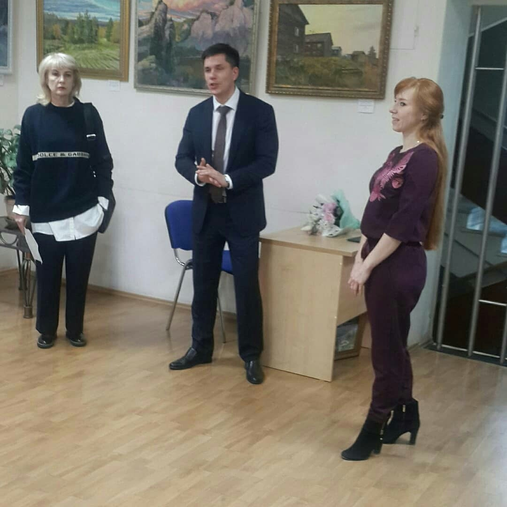

На главную
Рудый Наталия Валерьевна

Дата рождения: Январь 1989
Место рождения: Серов
Образование: Нижнетагильская Государственная Социально-Педагогическая Академия, 2011
Страница ВКонтакте: nataly_art_rud
Каталог работ
Река Чусовая. Камень Олений, 2025
Нижнетагильский музей-завод, 2025
Доменное хозяйство, 2025
Поле Иван-чая, 2025
Верхотурский Кремль. Светлый день, 2025
Старая домна, 2024
Поселок Черноисточинск, 2024
Тагильский пруд под облаками, 2024
Уральское лето, 2024
Городской пейзаж, 2023
Лев, 2023
Колокольчики, 2023
Демидовская дача, 2023
Домик в снегу, 2023
Нижний Тагил, 2022
Осеннее утро. Главный проспект, 2021
Вечерний Тагил, 2020
Вид на Лисью гору, 2020
Ай Петри. Крым, 2020
Весенняя симфония, 2019
Вид на устье Ушковской Канавы, 2019
Этюд под весенним солнцем, 2018
Велосипедист, 2018
Март на реке, 2018
Сплавщики, 2017
Золотая берёзка, 2017
В долине горных рек. Алтай, 2016
Исаакиевская площадь, 2016
Ели на закате, 2015
Верба в цвету, 2015
Байкал, 2014
Богатырь. Хмурый день, 2014
Суздаль. После дождя, 2013
Сиреневый туман. Чусовая, 2013
Златоглавая, 2012
Камень Мултык, 2011
Галерея

На пленэре, 2020

За работой, 2020

На открытии персональной выставки, 2018
См. также
Сгенерировано SmallSoft CatalogTools{kind=link}
{kind=link}
{kind=link}